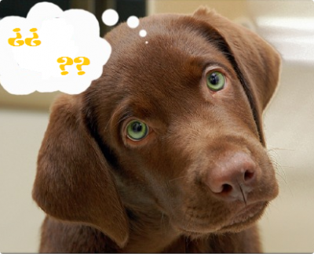

“Porque quiero que mis hijos tengan una responsabilidad al cuidarlo” o, “porque está de moda”. Deberías considerar tu decisión y no adoptar. Al decidir tener un perro, asumes un compromiso de 10 a 15 años. Es bueno que tus hijos asuman esta responsabilidad contigo, pero siempre debes ser tu el principal responsable de tu perro. Recuérdalo cuando tus hijos no quieran salir a jugar con él y seas tu él/la que lo saca. Nunca está razón debe ser una excusa para abandonarlo. Un perro es un ser vivo que merece tu admiración y respeto.
Antes de decidir el tipo de perro que quieres, revisa tu presupuesto. Mantener un perro no es barato y debes asegurarte de tener lo necesario para cumplir con algunos gastos:
Los perros al igual que los humanos odian estar solos por eso el tiempo que tu le puedas dedicar para jugar, salir de paseo y educarlos es vital para ellos y con el tiempo te darás cuenta que es vital para ti también. Recuerda que tu tienes amigos y una agenda llena de eventos sociales, él solo te va a tener a tí. Algunas veces vas a sentir una nariz fría en la espalda a las 3:00 de la mañana pidiendo ir al baño. Algunos domingos él va a querer hacer pereza contigo, otros se levantará temprano para que vayan de paseo. Aprenderá tu rutina y sabrá que día es el día de ustedes.
A diferencia tuya los perros envejecen muy rápido, pero al igual que tu, necesitarán a alguien que los cuide en su vejez. Los perros de 11 a 15 años de edad, empiezan a tener problemas de salud y muchas veces por estas razones son abandonados bajo la excusa que se volvieron una carga. Cuando pase esto y seguramente pasará debes pensar que tu perro jamás te abandonaría sin importar si estás en un buen o mal momento e incluso son capaces de morir por tí.